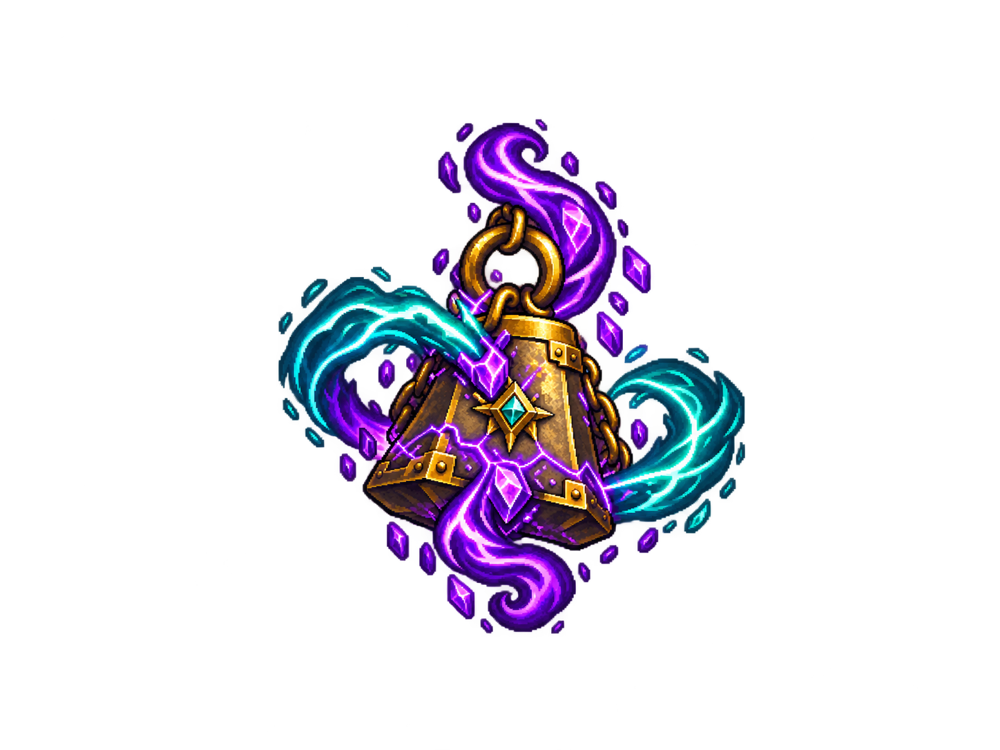
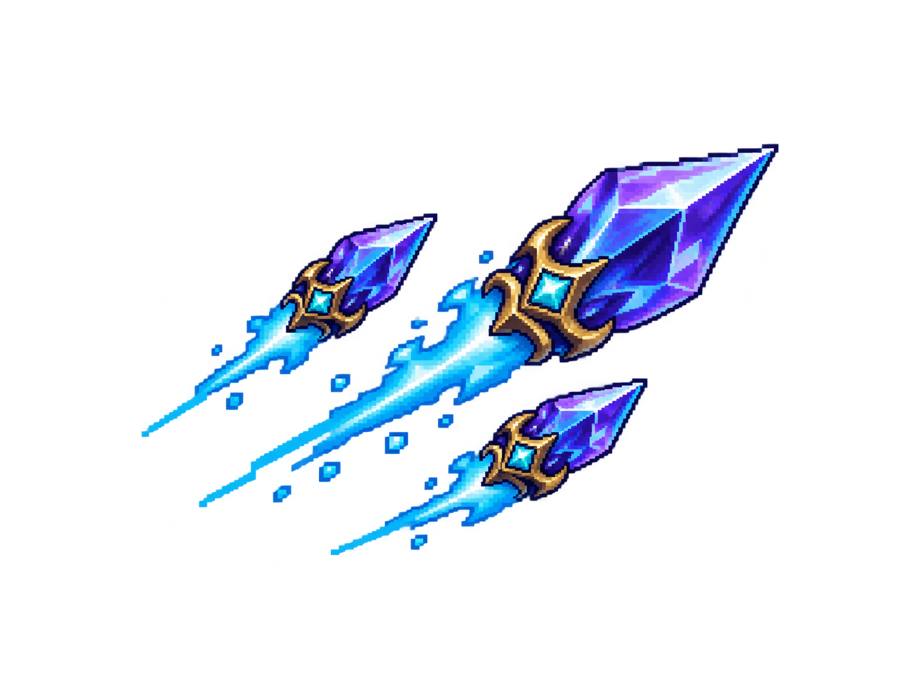
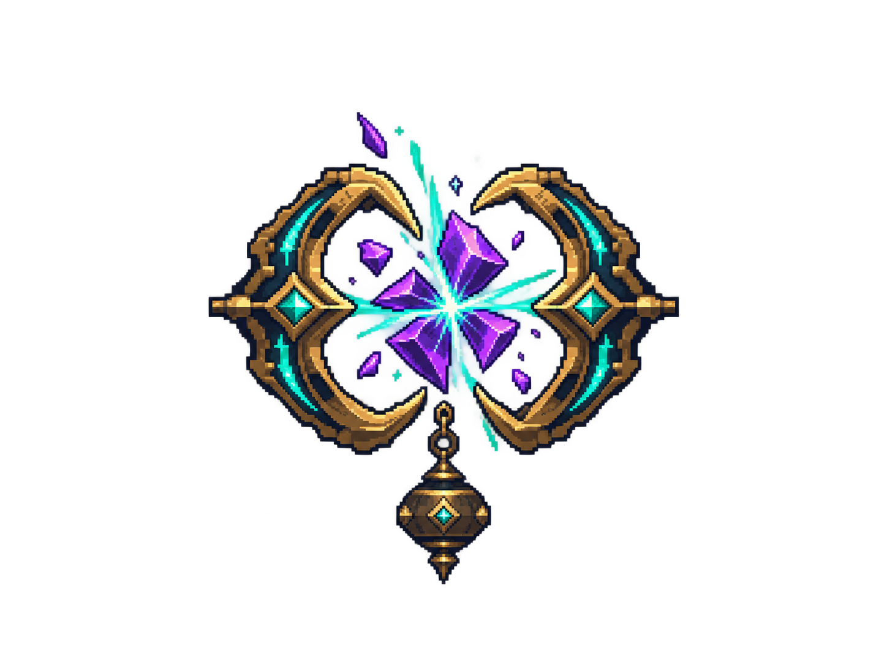
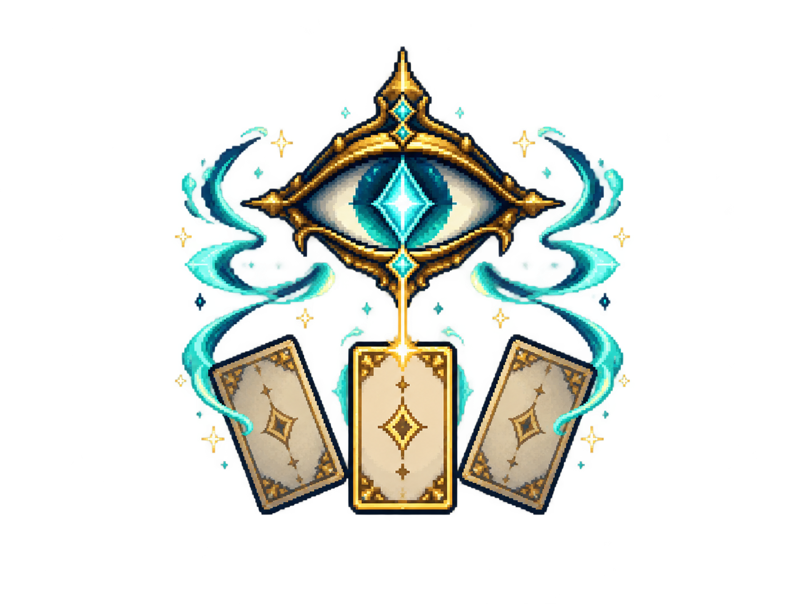
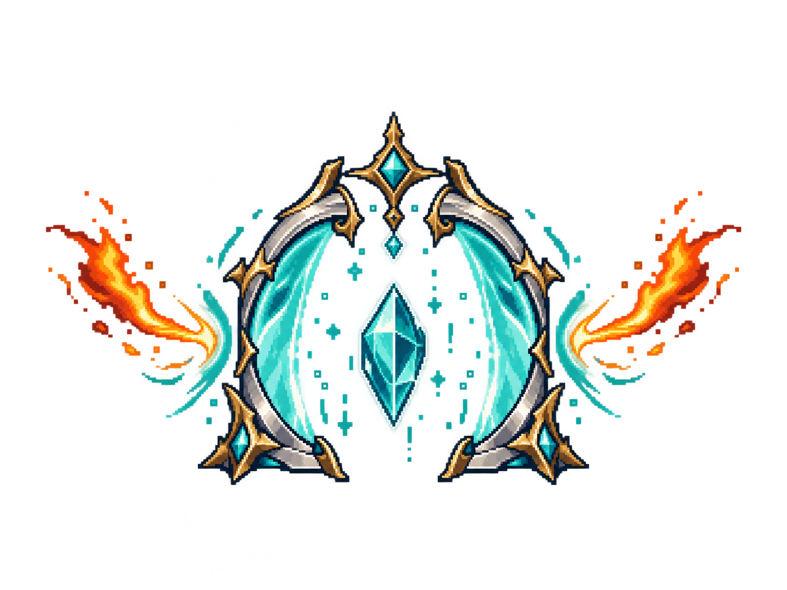
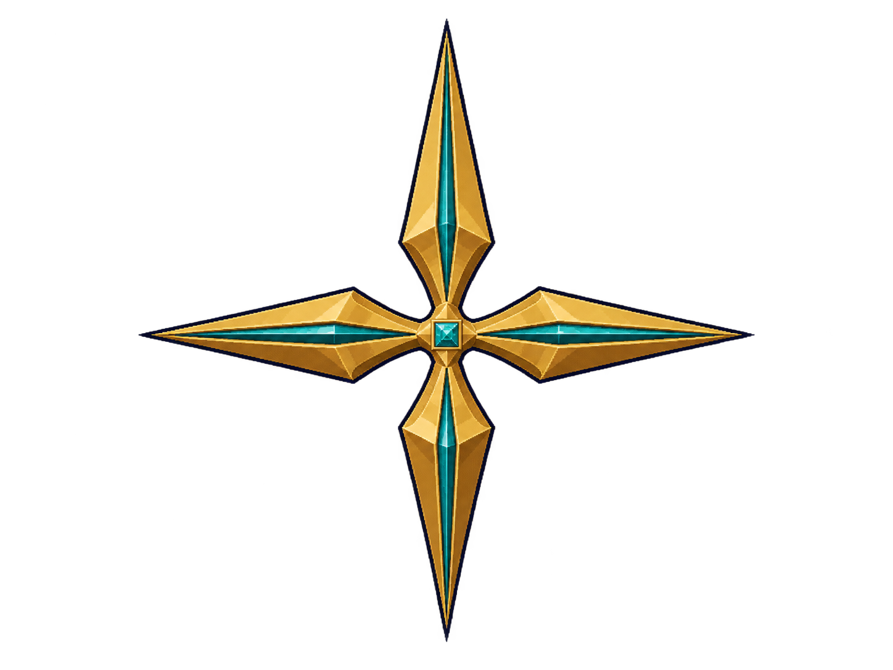
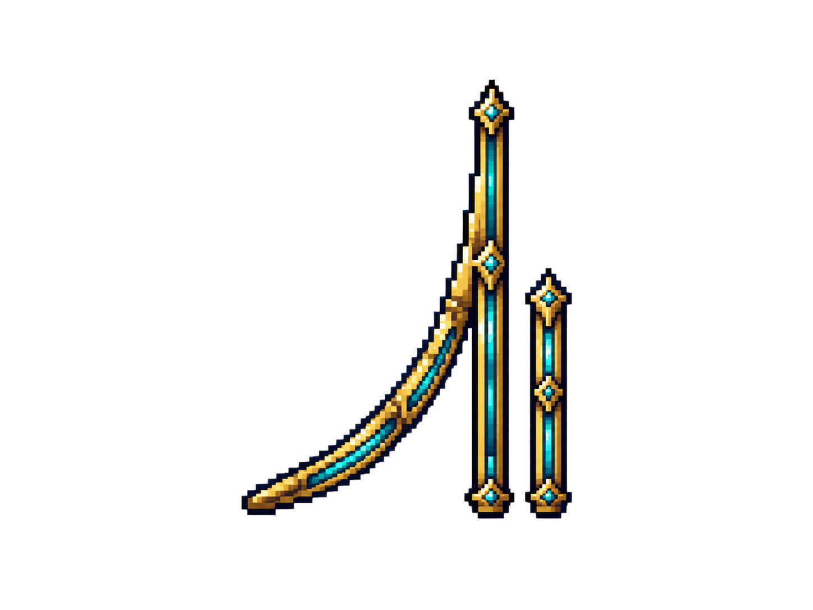
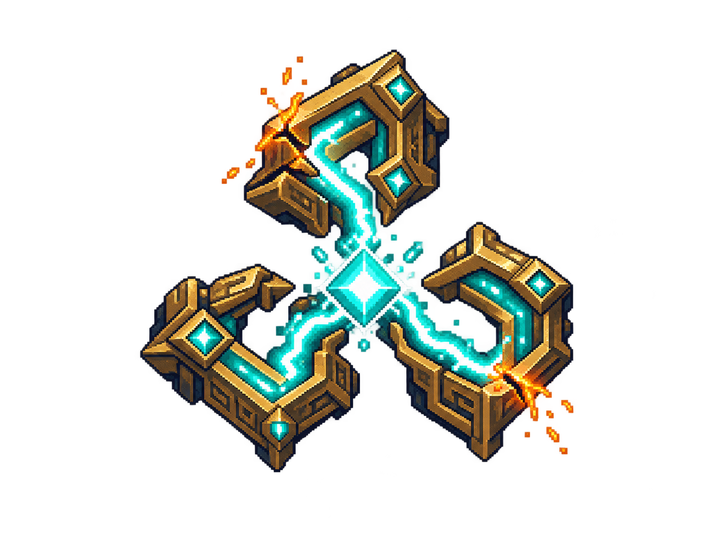

v1.0 卡牌设计草案 / 11 张透明主体插画 / 2026-10-06
像素奇幻风；无场景背景、卡面文字或外层卡框。“昂扬”以提供的上升符文为轮廓参考。

messy-wave · 1448 × 1086
instantly-sleep · 1448 × 1086

magic-missile · 1448 × 1086
aid · 1448 × 1086

counter-spell · 1448 × 1086

true-strike · 1448 × 1086

protective-flame · 1448 × 1086
pentagram-of-life · 1448 × 1086

engeas-four-point-star · 1448 × 1086

uplift · 1448 × 1086

instant-circuit-overload · 1448 × 1086